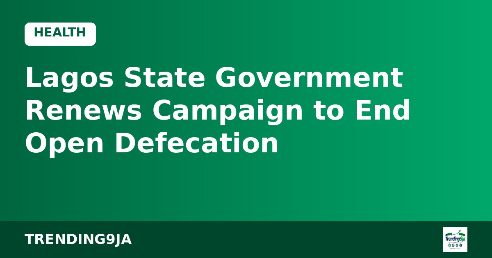

UNN Confirms Death of Four Students After Off-Campus Party in Enugu
UNN management has confirmed that four students died while six others were hospitalized following an off-campus party in Nsukka, Enugu State.

The Lagos State Government has launched a refreshed drive to boost environmental sanitation and eliminate open defecation across the state. The initiative aims to expand access to safe restroom facilities while promoting better hygiene standards among residents.
According to Vanguard, the announcement was made during an event marking World Toilet Day at Alausa in Ikeja on Friday. State officials gathered to highlight the critical role of clean facilities in safeguarding community health.
Olakunle Akodu, the special adviser to the governor on environment, observed that rapid population growth, swift urbanisation, and commercial expansion have placed severe strain on existing infrastructure. He emphasized that female residents especially require private, safe lavatories equipped with running water and handwashing stations.
Akodu explained that overcoming these infrastructure hurdles demands targeted government policies, steady financial investments, and active civic participation. He added that a clean and sustainable environment must ensure that every citizen can access dignified and functional restrooms.
Speaking on behalf of the permanent secretary in the environmental services office, Tajudeen Gaji, the sanitation services director, Hassan Sanuth, noted that proper lavatory access prevents disease outbreaks and protects human dignity.
Gaji cautioned that a lack of private sanitary facilities damages public health, personal security, school attendance, and economic engagement. He urged decision-makers to prioritize inclusive investments that cater directly to women, children, persons with disabilities, and other vulnerable populations.
Sources: Vanguard
← More Health storiesUNN management has confirmed that four students died while six others were hospitalized following an off-campus party in Nsukka, Enugu State.

Oladosu Adedolapo has emerged as the top graduating student in Medicine and Surgery at Edo State University after entering the institution at age 15.
The Nigerian Medical Association has asked the National Assembly to fix government hospitals rather than pass laws punishing health workers for rejecting emergency patients.
Nigeria's trending news, politics and entertainment, straight to your email.
By subscribing you agree to our Privacy Policy. Unsubscribe any time.